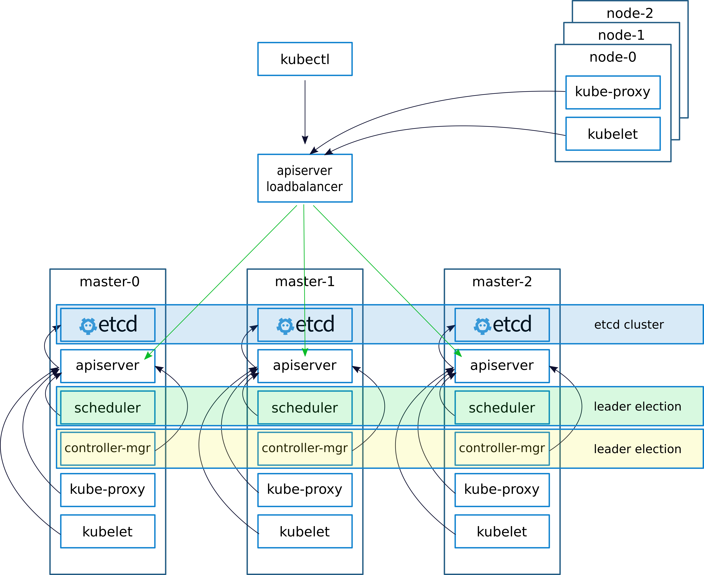

kubernetes 性能测试方法简介
文章目录
本文主要介绍kubernetes（以下简称k8s）在性能测试中的主要关注指标以及涉及的辅助测试工具。由于各企业在私有云建设过程中使用的技术标准不尽相同，文中尽可能介绍可能涉及的通用性测试项，由于作者水平有限，以下内容仅供参考，欢迎讨论以及指正。
部署环境简要
企业级k8s集群需要达到生产可用（GA），在部署上常采用高可用方案（HA），也即多台master节点和多台node节点的组合形式。生产上，k8s集群通常搭建在私有云或公有云IaaS之上，且需要较高的硬件资源支持。
集群资源
从k8s集群部署需求的角度来说，集群资源应该明确给出，包括CPU、内存、系统、存储、网络以及相关的性能指标，而这些都可以由IaaS层提供，这里简单声明如下：
- 集群存储：采用NAS作为后端持久化存储方案
- 集群网络：VMware提供的NSX-T容器网络方案
- 集群系统、CPU、内存资源列表：
| 角色 | 角色说明 | 节点数 | cpu | 内存 | 系统 | 存储大小 |
|---|---|---|---|---|---|---|
| master | k8s master节点 | 3 | 4 | 16 | CentOS 7.5 | 100G |
| node | k8s计算节点 | 2 | 8 | 16 | CentOS 7.5 | 100G |
集群部署架构
企业级集群部署架构需要考虑很多因素，其中最主要的是需要有管理平面和业务平面，核心则是降低平台的使用复杂度和运维复杂度，所以部署上我们不仅仅需要有高可用的业务集群，还需要有相应的配套服务机制，其中包括监控（metrics）、日志（Logs）、网络管控、存储管控、负载均衡、私有云场景还需要提供yum源和镜像仓库服务等。
这里，我们的监控采用单个集群使用
Prometheus作为TSDB+grafana作为数据展示，而日志方面则以ElasticSearch集群部署的方式进行存储收集。
业务集群的部署架构图则如下所示（图片来自这里）

容器网络测试
容器网络简介
k8s的最小调度单位为Pod，而Pod“内部”的容器会通过Linux namespace机制与infra容器共享网络栈，所以容器网络就是指Pod之间通信的网络，kubernetes以开放插件接口的形式（Container Network Interface）让第三方插件提供Pod间网络通信的能力。
目前主流的k8s容器网络插件有开源的Weave、Calico、Flannel-HostGW、Flannel-VxLAN、MacVLAN、IpVLAN…以及未开源的VMware NSX-T。
性能测试
从容器网络性能测试的角度来说，关注点主要在于不同场景下带宽、计算资源消耗的情况。下面简单介绍一下相关的测试场景和测试策略以及涉及的测试工具：
由于k8s网络插件在工作过程中存在Linux的
User Space和Kernel Space的交互（封包解包），这是性能损耗的主要来源之一；
如果考虑网络安全，需要加上网络插件的限制隔离机制（Network Policies）的测试。
- 场景一：同主机Pod间通信
- 场景二：跨主机Pod间通信
- 场景三：集群内主机和主机间通信
- 场景四：Pod与宿主机间通信
- 场景五：Pod与非宿主机间通信
- 测试策略：固定网络带宽，固定网络类型，测试不同数据包大小对网络吞吐量的影响，例如可以测试获取文件传输量超过10G，系统在文件传输高峰时对局域网的带宽要求，并对比容器网络传输和非容器网络（Bare Metal）传输之间的CPU消耗以及内存消耗情况。
- 测试工具：iperf3，容器化运行在k8s集群上
相关的测试可以参考这里。
网络延迟
造成容器网络延迟的主要原因是传输延迟及处理延迟，这里的测试关注点在于不同CNI插件下，不同场景的网络延迟。
- 场景一：通过Service的VIP或DNS进行集群内部访问
- 场景二：通过NodePort进行集群外部访问
- 场景三：通过IaaS层提供的LoadBalancer进行访问
- 测试策略：容器化运行
qperf，依据场景的不同，通过设置yaml文件为qperf添加不同的Service访问方式，测试其在访问过程中的网络延迟。 - 涉及工具：qperf
需要注意的是：由于容器网络是基于IaaS层网络搭建，而IaaS层网络通常又是一个跨数据中心的“大二层”网络，虚拟机本身的物理位置对k8s集群来说已经是无感知的了，如此一来，容器网络的测试指标与IaaS网络其实是耦合在一起的，那么容器网络的测试实际上也是包含了IaaS层网络性能考量。
容器存储测试
针对有状态应用的数据持久化以及容器日志存储需求，k8s设计了容器存储接口（CSI）并辅以PV、PVC的机制实现分布式应用的持久化存储，目前支持CSI实现容器持久化存储的方案有很多。存储的测试主要考量的指标是容器对数据卷的读写IO，除此之外，还需要考虑容器迁移是否依然能够实现数据持久化。
- 场景一：多容器实例跨主机部署，数据持久化
- 场景二：单个容器对数据卷进行读写IO
- 测试策略：k8s上使用deployment部署多个应用实例，每个Pod使用同一个PVC挂载同一个目录（Pod一般会分布在不同的主机上），再查看多个应用实例的数据是否同步写入同一后端存储；此外，在单容器内部使用
dd命令在挂载目录下（本地存储或分布式存储）进行读、写以及读写测试，并使用参数iflag=direct，观察输出的平均读写时间。 - 涉及工具：dd
k8s 并发测试
对于使用go编写的k8s来说，并发能力理论上很强。性能测试上，可以使用多线程执行创建、删除、查询各类资源，由于k8s的最小调度单元为Pod，测试时可以仅使用创建deployment作为场景，主要的关注指标为错误率和平均响应时间以及硬件资源消耗：
- 场景一：多线程并发创建deployment，再并发删除deployment
- 测试策略：使用Jmeter多线程方式发送创建不同name的deployment资源的json文件至
kube-apiserver，删除亦如此；同时通过Prometheus和Grafana对集群的资源和相关组件的资源使用进行监控。 - 涉及工具：
JmetercurlPrometheusGrafana
kube-apiserver api 规范
使用curl测试一下kube-apiserver的api规范：1
2
3curl -X POST \
-d @filename.json -H "Content-Type: application/json" \
-H "Authorization: Bearer ${token}" ${api_url_or_ip:8080}/apis/extensions/v1beta1/namespaces/${namespace_name}/deployments
deployment命名不可重复
由于deployment的name、label不可以重复，这里可以使用jmeter设置变量，并将变量赋值到将要发送的json文件内，点击deployment.json即可查看deployment的json文件。
横向伸缩能力测试
k8s的横向伸缩能力主要体现在两个层面：node扩展和Pod扩展，但是node的扩展同时需要IaaS的能力支持，我们这里仅仅考虑Pod的横向扩缩容。k8s可以开启Horizontal Pod Autoscaler功能，对接了metrics指标后，可以实现根据指标策略来自动扩缩应用副本数（Pod数）。因此，性能测试需要关注的指标有：Pod在扩缩容过程中所需的启停时间；扩缩过程中服务是否会出现中断，也即服务的错误率；以及服务的TPS变化；同时对集群资源的使用率进行监控。
- 场景一：对deployment进行扩容操作
- 场景二：对deployment进行缩容操作
- 测试策略：部署单个应用至k8s集群，关联的service端口暴露方式为NortPort，使用Jmeter对该服务进行多线程持续访问；修改deployment的replica参数，使用
kubectl apply -f ${deployment.yaml}更新应用，观察Jmeter的TPS、Error指标数据，以及集群资源监控数据。
关于scale out/in，k8s把Pod当做”cattle”而不是”pet”去管理，这里的测试并没有使用HPA，所以手动扩缩容实际上使用的是Rolling Update，Rolling Update思路也即关闭正在运行的Pod再创建新的Pod。所以，缩容过程中可能会出现部分服务暂时中断的现象，jmeter会出现Error，如果将Pod的”优雅停”时间（默认30s）设置长一点应该能够减少Error出现的几率。
- 涉及工具：
JmeterPrometheusGrafana
集群高可用测试
k8s集群高可用其实就是集群各组件的高可用，测试关注点则是集群部分组件甚至节点关闭（如master或node宕机），集群是否还能正常工作，以及业务应用对外提供服务的性能是否还能保持稳定。
- 场景一：正在对外提供服务的业务集群突然出现部分机器断网、宕机，或者kubelet等组件停止运行
- 测试策略：使用systemctl命令启停相关组件，模拟组件的工作中断；使用docker stop命名停止以静态Pod运行的服务组件，模拟组件的工作终止；使用ifconfig命令启停节点的网卡，模拟网络的中断；直接关闭机器模拟集群节点的突然宕机；同时观察集群应用服务及其管理是否能正常工作，业务运行相关指标是否下降。
- 涉及工具：
systemdifconfigdockervcenterJmeter
总结
优秀的架构一定是可扩展的，尤其是大规模集群管理这样的底层系统，k8s的扩展能力太强以至于它更像是IaaS和PaaS之间的中间层。以Kubernetes为核心的PaaS平台已在国内外众多企业内实施落地，由于kubernetes的插件化设计，各企业在落地过程中需要解决的网络方案、存储方案、负载均衡方案、监控体系、日志体系等各不相同，从而在性能测试方法上也不尽相同，本文主要介绍了部分性能测试可能需要关注的地方以及相关工具，不够全面系统，内容仅供参考。
Acknowledgment
灵雀云的小伙伴们给予了文档参考和技术支持，在此致谢。
Reference
原文作者: kiddie92
原文链接: https://kiddie92.github.io/2019/01/23/kubernetes-性能测试方法简介/
许可协议: 知识共享署名-非商业性使用4.0国际许可协议